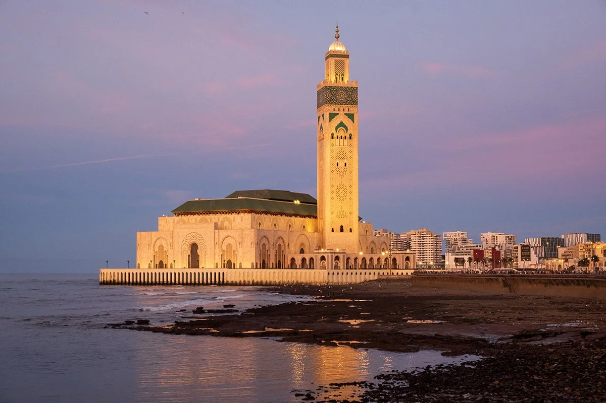
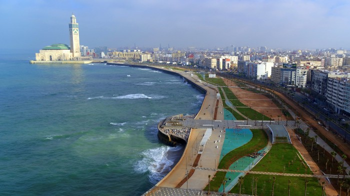
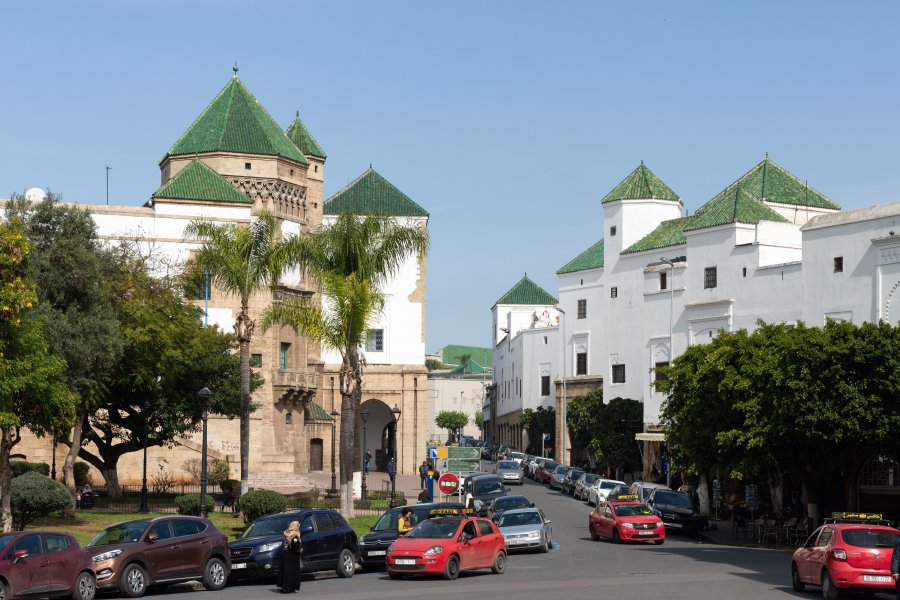
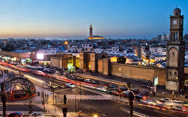
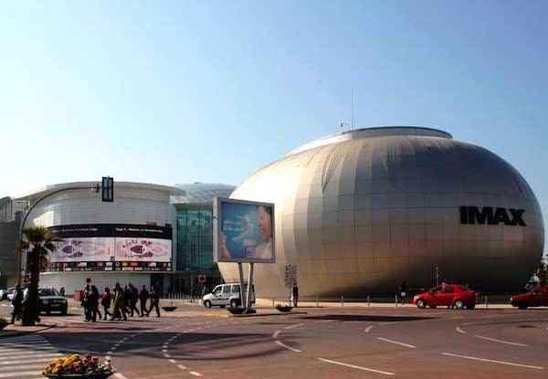
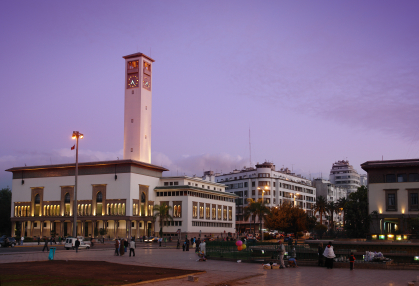
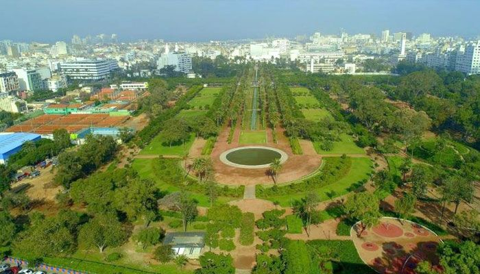
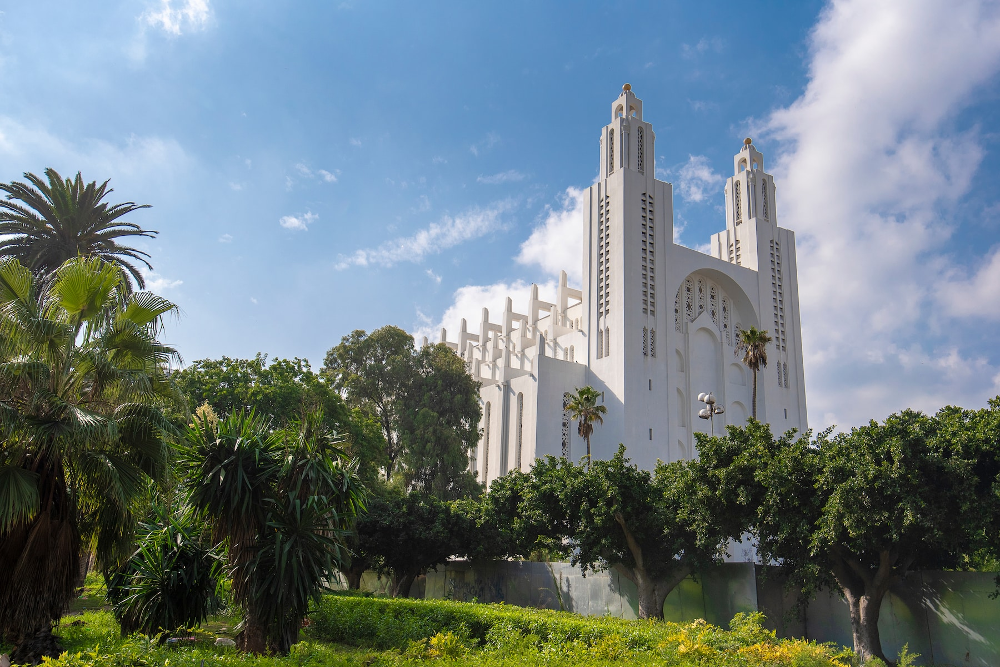
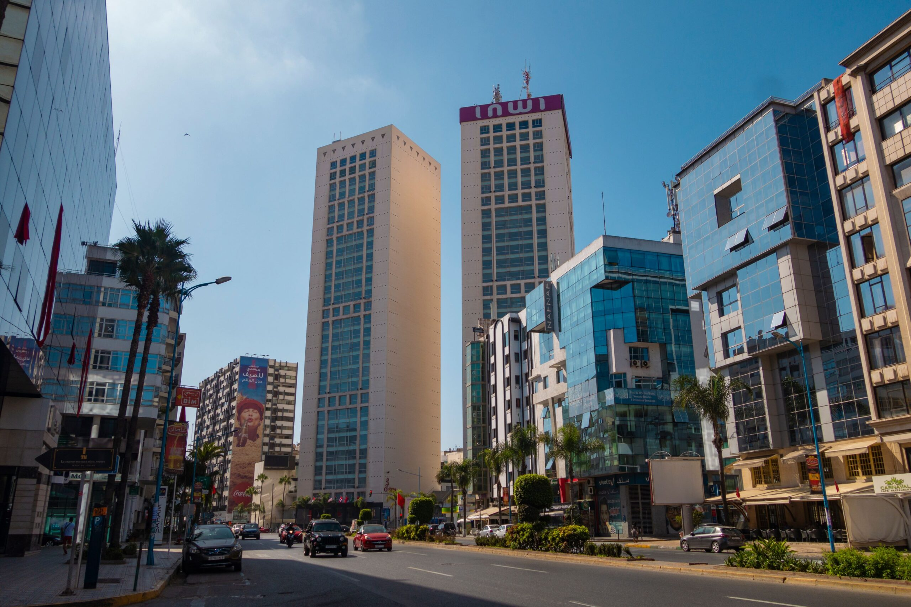

À propos de Casablanca
Casablanca est la plus grande ville du Maroc et son moteur économique. Sa position en bord d'Atlantique et son port font d'elle un centre de commerce, d'industrie et de services.
Faits rapides
- Population: ~3,7M
- Région: Casablanca-Settat
- Langues: Arabe, Français
- Climat: Océanique
Culture
Casablanca possède une culture unique qui mélange tradition marocaine et modernité urbaine. La scène artistique est dynamique, avec des galeries, ateliers, et musiciens émergents. Les quartiers comme Derb Sultan et Habous préservent la tradition à travers les souks, l'artisanat et la gastronomie locale.
Mention spéciale: la cuisine casablancaise marie plats marocains classiques avec influences internationales.
Art contemporain
Galeries et expositions régulières.
Musique
Scène jeune: hip-hop, fusion et festivals locaux.
Marchés
Souks traditionnels et marchés d'artisanat.
Cuisine
Restaurants modernes et street-food marocaine.
Sites incontournables

Mosquée Hassan II
Construite au bord de l'océan, l'une des plus grandes mosquées au monde.

La Corniche d'Ain Diab
Promenade, plages, restaurants et vie nocturne.

Quartier Habous
Architecture traditionnelle, librairies et marchés artisanaux.

L’Ancienne Médina
Vieilles ruelles, artisanat et ambiance authentique. Idéal pour découvrir la Casablanca traditionnelle.

Morocco Mall
L’un des plus grands centres commerciaux d’Afrique, réputé pour son aquarium géant et ses magasins internationaux.

Place Mohammed V
Cœur administratif de Casablanca, entourée de bâtiments Art déco et néo-mauresques.

Parc de la Ligue Arabe
Grand espace vert rénové, idéal pour les balades, sorties familiales et événements culturels.

Cathédrale du Sacré-Cœur
Ancienne cathédrale devenue espace culturel. Architecture impressionnante de style néo-gothique.

Les Twin Center
symboles modernes de Casablanca, abritent commerces, bureaux et restaurants au cœur du quartier Maârif.